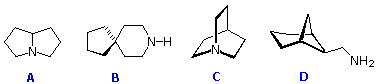
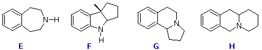

Part 1. For each of the amines A through D, exhaustive methylation (treatment with excess methyl iodide), followed by Hofmann elimination (heating with AgOH), repeated as necessary, removes the nitrogen atom in the form of trimethylamine. Select a compound by checking one of the buttons under the formulas, and then indicate the number of repetitive Hofmann eliminations required to remove the nitrogen by entering a number (1 to 4) in the designated answer site (red).
Finally, draw a structural formula for the hydrocarbon product remaining, after all the eliminations are completed, in the Drawing Window on the right. Don't draw hydrogen substituents or specify stereoisomers. When you are finished, check your answer by pressing the "Check Answer" button for Part I.
Part 2. For some of the amines E through H, repetitive exhaustive methylation, followed by Hofmann elimination removes the nitrogen atom in the form of trimethylamine; for others this severing of the nitrogen function is not possible. Select a compound by checking one of the buttons under the formulas, and then indicate whether the nitrogen function can be removed by entering a Yes or No in the designated answer site(red). Finally, draw a structural formula for the product remaining, after all the eliminations are completed, in the Drawing Window. Don't specify stereoisomers. When you are finished, check your answer by pressing the "Check Answer" button for Part II.
Part I

Number of eliminations?
Part II

Removal of nitrogen?
This script written by The Edvibe Team, edvibe.co.ke. Please send comments and corrections to contact@edvibe.co.ke. JME Molecular Editor v2002.05 by: by Peter Ertl